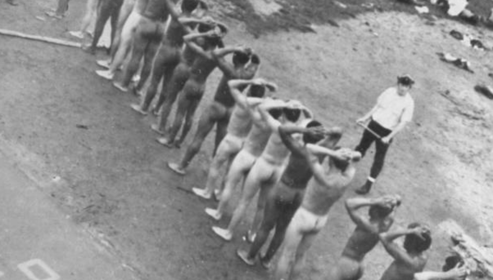

The Racial Structure of Attica
The demographics of Attica in 1971 reflect the racial structure of the broader prison-industrial complex. The facility held nearly 2,300 men—disproportionately Black and Puerto Rican—and had an overwhelmingly, if not exclusively, white cohort of correctional officers and other staff members. These racial disparities mirror the broader white supremacist structure of the carceral system that disproportionately surveils, arrests, prosecutes, sentences, and incarcerates communities of color.
Those inside the prison had endured inhumane conditions that negated their dignity and subjected them to daily humiliation. They endured beatings, received inadequate medical treatment, were fed on sixty-three cents, and were given one roll of toilet paper for an entire month. People who have been incarcerated in this facility, such as Arthur Harrison, go on to describe the conditions of the prison to remind them of the conditions on slave plantations. This reflection clearly demonstrates the continuation of racial violence sanctioned and supported by the state.
“I thought I knew about racism and racism in the criminal justice system and [...] in our society. I had a whole new lesson learned in the Attica experience.” — Martin Stolar
Race and Solidarity
The rebellion sparked a shared sense of solidarity that was previously suppressed by racial segregation both within and outside the confines of the prison. Despite the range of ethnic, religious, and philosophical disparities, the Attica revolutionaries linked up to critique and organize against the prison as a system of oppression.
As described by Officer Rhodes, “the Muslims preached peace and loving and didn't want to go with any drastic violence and taking of hostages, but the Black Panthers and Young Lords wanted to go into it like a small war.” Evidently, despite the differing opinions, they were able to come together to rise against the prison.
The solidarity found within the rebellion is itself a form of knowledge production that required an intellectual analysis of the power structures and racial hierarchies that worked to oppress them all.
Race and the State Response
Doctors were called into the prison to treat those who were injured during the uprising, however, these concerns were mainly towards the hostages who were white correctional officers and staff. Rooted in racial stereotypes of savagery and violence attributed to Black and brown people, rumors about these hostages being dead, or seriously injured, quickly circulated.
Given that the hostages were white officers and employees, these rumors reflect a white victim and Black perpetrator dichotomy that enforces racial hierarchies and simultaneously justifies the criminalization of Black and brown people. Those who quickly spread and accepted these narratives did so because it confirmed existing racial assumptions about Black violence, especially from those found within prisons.
Furthermore, this imagery allowed the justification of the violent and inhumane retaliation from law enforcement that then portrayed this suppression as a heroic act, rather than a continued violation of the men who have decided to fight against their oppressors.
The Geography of Race
The racial logic of Attica was not only demographic—it was spatial. The prison sat in Wyoming County, a rural, overwhelmingly white county in western New York, while the majority of its incarcerated population had been drawn from Black and Puerto Rican neighborhoods in New York City. This distance was not incidental. It severed prisoners from their families, their communities, and their legal support, while embedding the institution within a local white economy dependent on prison jobs.
Attica Correctional Facility sits in Wyoming County—a predominantly white, rural area—while the majority of its 1971 population came from Black and Puerto Rican neighborhoods in New York City, over 350 miles away.
